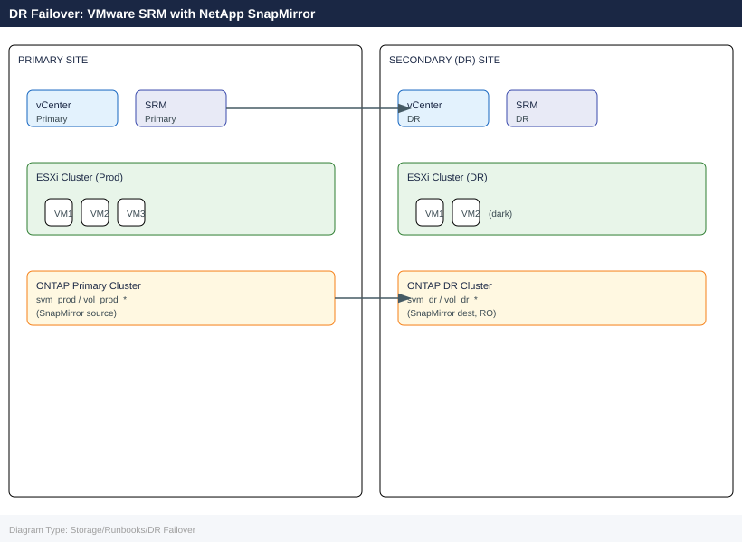

DR Failover: VMware SRM with NetApp SnapMirror¶
Applies to: Storage (multi-vendor)
Cross-product runbook for executing a DR failover and failback using VMware Site Recovery Manager (SRM) with NetApp SnapMirror replication. Covers pre-failover checks, declaring DR, SRM recovery plan execution, SnapMirror break, VM validation, failback resynch, and escalation contacts.

Before You Begin¶
Architecture prerequisites:
| Component | Primary Site | DR Site |
|---|---|---|
| vCenter | vcenter-prod.corp.local | vcenter-dr.corp.local |
| SRM | srm-prod.corp.local (Appliance 9.x+) | srm-dr.corp.local (paired) |
| ONTAP | ontap-primary cluster | ontap-dr cluster |
| SnapMirror | Source SVM: svm_prod | Destination SVM: svm_dr |
| Networking | Production VLANs | DR VLANs (mapped in SRM network mappings) |
| SRM Protection Groups | Configured and tested | — |
| SRM Recovery Plans | At least one full-site plan | — |
Required credentials for DR execution:
- vCenter administrator (both sites)
- SRM administrator (both sites)
- ONTAP cluster-admin (both clusters)
- Application owner contacts (see Escalation section)
Pre-Failover Checks¶
Check SnapMirror Replication Lag¶
# On PRIMARY ONTAP cluster
snapmirror show -destination-path svm_dr:* -fields lag-time,state,newest-snapshot
# Example healthy output:
# Destination Path State Lag-Time Newest Snapshot
# svm_dr:vol_dr_app01 Snapmirrored 00:02:15 daily.2026-06-21_2200
# Alert threshold: lag > 1h indicates replication issues — investigate before failover
# Critical threshold: lag > RPO SLA — document RPO breach in incident ticket
Expected output
Destination Path State Lag-Time Newest Snapshot
svm_dr:vol_dr_app01 SnapMirrored 00:02:15 daily.2026-06-21_2200
svm_dr:vol_dr_app02 SnapMirrored 00:01:47 daily.2026-06-21_2200
svm_dr:vol_dr_db01 SnapMirrored 00:15:33 daily.2026-06-21_2145
svm_dr:vol_dr_logs SnapMirrored 01:23:42 daily.2026-06-21_2100
svm_dr:vol_dr_backup SnapMirrored 00:08:19 daily.2026-06-21_2155
Common errors
| Error | Fix |
|---|---|
Error: command not found: snapmirror |
Ensure you are connected to the ONTAP cluster via SSH or the ONTAP CLI, not a Linux shell. |
Error: No matching snapmirror relationships found |
Verify the destination SVM name is correct and SnapMirror relationships exist with snapmirror list-destinations. |
Error: RPC: Authentication failed |
Confirm your ONTAP user account has the "snapmirror" capability assigned in the role. |
Verify SRM Test Run History¶
# In SRM UI: Site Recovery > Recovery Plans > <PlanName> > History
# Confirm last test completed successfully within the past 30 days
# SRM REST API — check last test result
curl -sk -u "admin:<pass>" \
"https://srm-prod.corp.local/api/rest/vr/1.0/api/recoveryplans" \
-H "Accept: application/json" | python3 -m json.tool | grep -A5 "lastTestResult"
Expected output
{
"id": "recoveryplan-42",
"name": "DR-Failover-Primary-DC",
"description": "Production VMware cluster failover to secondary site",
"lastTestResult": {
"status": "SUCCESS",
"timestamp": "2024-01-15T14:32:18.000Z",
"duration": "PT2H14M",
"recoveredVMs": 47,
"failedVMs": 0
},
"nextScheduledTest": "2024-02-15T02:00:00.000Z",
"protectionGroupCount": 3
}
Common errors
| Error | Fix |
|---|---|
curl: (60) SSL certificate problem: self signed certificate |
Add -k flag to skip certificate verification (already present in the command, but if still occurring, verify SRM server certificate is trusted or use --cacert with the proper CA bundle). |
jq: command not found |
Install python3-json-tool or use python3 -m json.tool instead (the command already uses the latter, so ensure Python 3 is installed with python3 --version). |
HTTP 401 Unauthorized |
Verify the SRM admin credentials are correct and the user has API access permissions in SRM's role-based access control settings. |
Verify RPO for Each Protection Group¶
# Per-volume SnapMirror lag on PRIMARY cluster
snapmirror show -type dp -fields source-path,destination-path,lag-time,transfer-state
# Expected: lag < RPO SLA (typically 1h for tier-1 workloads, 4h for tier-2)
# Document any volumes exceeding RPO in the incident ticket before proceeding
Expected output
Source Path Destination Path Lag Time Transfer State
================================================================================================
cluster1:/vol/db_tier1 cluster2:/vol/db_tier1 00:45:23 Idle
cluster1:/vol/app_tier1 cluster2:/vol/app_tier1 00:52:17 Idle
cluster1:/vol/web_tier2 cluster2:/vol/web_tier2 03:28:44 Idle
cluster1:/vol/archive_t3 cluster2:/vol/archive_t3 18:32:15 Idle
cluster1:/vol/logs_tier1 cluster2:/vol/logs_tier1 00:38:09 Transferring
5 entries were displayed.
Common errors
| Error | Fix |
|---|---|
Error: command not found: snapmirror |
Verify you are logged into the ONTAP cluster CLI (not the hypervisor) and have appropriate admin credentials. |
Error: No SnapMirror relationships found |
Confirm SnapMirror relationships exist on the primary cluster using snapmirror list-destinations and verify replication is initialized. |
Final Go/No-Go Checklist¶
Pre-failover gate — all must be YES before proceeding:
[ ] SnapMirror lag within RPO SLA for all protected volumes
[ ] SRM recovery plan test passed within 30 days
[ ] DR site ESXi hosts healthy (check vCenter-DR)
[ ] DR site ONTAP cluster reachable (ping + ssh)
[ ] Incident/change record opened
[ ] Application owners notified
[ ] Change manager approval obtained (for planned failover)
Phase 1: Declare DR¶
1.1 Notification Checklist¶
CONTACTS TO NOTIFY (fill in for your environment):
- Incident Commander: ___________________________
- Application Owner(s): _________________________
- Network Team: __________________________________
- Change Manager: ________________________________
- Customer/Stakeholder: __________________________
COMMUNICATION CHANNEL: #major-incident Slack / Bridge call +XX-XXXX-XXXXXX
1.2 Freeze Production Writes (Planned Failover Only)¶
# For planned failover — quiesce application writes before breaking SnapMirror
# This minimises RPO to near-zero
# Example: stop application services on VMs at primary site
# (Application-specific — coordinate with app owner)
ssh app-server-01.prod "sudo systemctl stop myapp"
ssh db-server-01.prod "sudo systemctl stop postgresql"
# Force a final SnapMirror update to capture quiesced state
snapmirror update -destination-path svm_dr:vol_dr_app01
snapmirror update -destination-path svm_dr:vol_dr_db01
# Wait for transfer to complete
snapmirror show -destination-path svm_dr:* -fields transfer-state
# State must be "Idle" before proceeding
Expected output
Connection to app-server-01.prod closed.
Connection to db-server-01.prod closed.
Operation succeeded: SnapMirror update started for destination "svm_dr:vol_dr_app01".
Operation succeeded: SnapMirror update started for destination "svm_dr:vol_dr_db01".
Destination Path Transfer State
svm_dr:vol_dr_app01 Transferring
svm_dr:vol_dr_db01 Transferring
svm_dr:vol_dr_logs01 Idle
(After ~45 seconds, re-run snapmirror show)
Destination Path Transfer State
svm_dr:vol_dr_app01 Idle
svm_dr:vol_dr_db01 Idle
svm_dr:vol_dr_logs01 Idle
Common errors
| Error | Fix |
|---|---|
ssh: Could not resolve hostname app-server-01.prod: Name or service not known |
Verify DNS resolution and hostname spelling, or use the FQDN with the correct domain suffix. |
Error: command failed: SnapMirror relationship does not exist for destination "svm_dr:vol_dr_app01" |
Confirm the SnapMirror relationship is initialized and the destination path matches the actual SVM and volume names exactly. |
Error: command failed: This operation is not permitted: SnapMirror transfer already in progress |
Wait for the current transfer to complete (check with snapmirror show) before issuing another update command. |
Phase 2: SRM Failover¶
2.1 Run Recovery Plan in SRM¶
# Via SRM UI (preferred for audit trail):
# 1. Log in to SRM at primary site (or DR site if primary is down)
# 2. Navigate: Site Recovery > Recovery Plans > <PlanName>
# 3. Click "Run" > select "Failover" (not Test)
# 4. Confirm: "I understand this is not a test"
# 5. Monitor progress in the recovery plan steps panel
# Via SRM REST API (for automation/scripted DR):
# Get recovery plan ID first
PLAN_ID=$(curl -sk -u "admin:<pass>" \
"https://srm-dr.corp.local/api/rest/vr/1.0/api/recoveryplans" \
-H "Accept: application/json" | python3 -c "import sys,json; d=json.load(sys.stdin); print(d['list'][0]['id'])")
# Start recovery plan
curl -sk -X POST -u "admin:<pass>" \
"https://srm-dr.corp.local/api/rest/vr/1.0/api/recoveryplans/${PLAN_ID}/run" \
-H "Content-Type: application/json" \
-d '{"mode": "failover"}'
Expected output
[
{
"id": "rp-42857d9c-1a3f-4b2e-9e11c-7f2d8a9b5c3e",
"name": "Production-DR-Plan-01",
"status": "ready",
"siteId": "site-dr-001"
}
]
{"taskId": "task-8f4c2a91-7e3d-4b1f-a8c9-2e5f7d3a1b6c", "status": "running", "progress": 0}
Common errors
| Error | Fix |
|---|---|
curl: (60) SSL certificate problem: self signed certificate |
Add -k flag to curl command to skip SSL verification, or import the SRM certificate into your system's CA bundle. |
{"error": "Unauthorized", "code": 401} |
Verify the admin password is correct and URL-encoded if it contains special characters; test credentials separately with a simple GET request first. |
jq: command not found |
Install jq package (apt-get install jq on Debian/Ubuntu or yum install jq on RHEL) or use the provided python3 JSON parser instead. |
2.2 Break SnapMirror on DR Cluster¶
SRM with NetApp ONTAP SRA breaks SnapMirror automatically during recovery plan execution. If manual intervention is required:
# On DESTINATION (DR) ONTAP cluster
# Break SnapMirror relationship — makes destination volume read-write
snapmirror break -destination-path svm_dr:vol_dr_app01
snapmirror break -destination-path svm_dr:vol_dr_db01
# Verify destination volumes are now read-write
volume show -vserver svm_dr -fields type
# Expected: type = RW (previously DP)
# List available snapshots on the newly promoted DR volume
snapshot show -vserver svm_dr -volume vol_dr_app01
Expected output
Operation succeeded: SnapMirror relationship between "svm_prod:vol_app01" and "svm_dr:vol_dr_app01" has been broken.
Operation succeeded: SnapMirror relationship between "svm_prod:vol_db01" and "svm_dr:vol_dr_db01" has been broken.
Vserver Volume Type
----------- --------------- ----
svm_dr vol_dr_app01 RW
svm_dr vol_dr_db01 RW
Vserver Volume Snapshot Created
-------- --------------- ---------------------------------------- --------
svm_dr vol_dr_app01 hourly.2024-01-15_0200 01/15/2024 02:00:15
svm_dr vol_dr_app01 hourly.2024-01-15_0100 01/15/2024 01:00:22
svm_dr vol_dr_app01 daily.2024-01-14_0000 01/14/2024 00:15:08
svm_dr vol_dr_app01 weekly.2024-01-08_0000 01/08/2024 00:30:45
svm_dr vol_dr_app01 snapmirror.c1d9e8f2-4a7b-11ee-9c2a... 01/15/2024 01:47:33
Common errors
| Error | Fix |
|---|---|
Error: command failed: SnapMirror relationship does not exist for destination "svm_dr:vol_dr_app01" |
Verify the destination path is correct and the relationship exists with snapmirror show -destination-path svm_dr:vol_dr_app01. |
Error: command failed: Cannot break SnapMirror relationship in "snapmirrored" state |
Wait for the current SnapMirror transfer to complete with snapmirror show -destination-path svm_dr:vol_dr_app01 before attempting the break operation. |
2.3 Re-register Datastores in DR vCenter¶
SRM re-registers datastores and VMs automatically as part of the recovery plan. If manual re-registration is needed:
# Connect to DR vCenter
Connect-VIServer -Server vcenter-dr.corp.local -Credential (Get-Credential)
# Rescan storage on all DR ESXi hosts
$drHosts = Get-VMHost -Location (Get-Cluster "DR-Cluster")
foreach ($h in $drHosts) {
Get-VMHostStorage -VMHost $h -RescanAllHba -RescanVmfs
}
# Add NFS datastore pointing to DR ONTAP LIF
foreach ($h in $drHosts) {
New-Datastore -VMHost $h -Name "ONTAP-DR-DS01" `
-NfsHost "<dr-nfs-lif-ip>" -Path "/vol_dr_app01" -Nfs
}
Phase 3: Validate¶
3.1 VM Power-On Sequence¶
# SRM handles power-on ordering from the recovery plan priority settings
# To manually verify and power on:
Connect-VIServer -Server vcenter-dr.corp.local -Credential (Get-Credential)
# Check VM status after SRM recovery
Get-VM -Location (Get-Cluster "DR-Cluster") |
Select-Object Name, PowerState, NumCpu, MemoryGB |
Sort-Object Name
# Power on any VM that did not start automatically (in dependency order)
Start-VM -VM (Get-VM "db-server-01")
Start-Sleep -Seconds 120
Start-VM -VM (Get-VM "app-server-01")
3.2 Application Health Checks¶
# Verify application service is running on DR VMs
ssh app-server-01.dr "systemctl is-active myapp && curl -sf http://localhost:8080/health"
# Database connectivity
ssh db-server-01.dr "psql -U app_user -h localhost -c 'SELECT 1;'"
# Check for data consistency (compare row counts against last known good)
ssh db-server-01.dr "psql -U app_user -d appdb -c 'SELECT COUNT(*) FROM orders;'"
# Confirm storage I/O on DR ONTAP volume
# On DR ONTAP cluster:
statistics show -object nfsv3 -instance svm_dr -counter avg_latency,total_ops
volume show -vserver svm_dr -volume vol_dr_app01 -fields used,available
Expected output
active
{"status":"healthy","uptime":"2847s","version":"3.2.1"}
psql (14.8, server 14.8)
Type "help" for help.
?column?
----------
1
(1 row)
count
--------
847293
(1 row)
Object: nfsv3
Instance: svm_dr
Counter Value
avg_latency 12.4ms
total_ops 1847392
Vserver Volume Used Available
--------- -------------- ---------- ----------
svm_dr vol_dr_app01 487.2GB 512.8GB
Common errors
| Error | Fix |
|---|---|
psql: error: connection to server at "localhost" (127.0.0.1), port 5432 failed: Connection refused |
Verify the PostgreSQL service is running on db-server-01.dr with systemctl status postgresql and check that replication has completed before testing connectivity. |
ssh: Could not resolve hostname app-server-01.dr: Name or service not known |
Ensure DNS resolution is working for DR hostnames or use IP addresses directly; verify network connectivity to the DR site is active. |
Error: command failed: permission denied. Reason: User "app_user" does not have SELECT privilege on table "orders". |
Grant SELECT permissions to app_user on the orders table using GRANT SELECT ON orders TO app_user; on the DR database. |
3.3 DNS and Load Balancer Updates¶
# Update DNS to point application FQDNs to DR IPs
# (Tool-dependent — examples for nsupdate / Route53 / Infoblox)
nsupdate -k /etc/dns/Kapp.key <<EOF
server dns-mgmt.corp.local
update delete app.corp.local A
update add app.corp.local 300 A <dr-app-ip>
send
EOF
# Verify DNS propagation
dig app.corp.local @dns-mgmt.corp.local +short
# Update load balancer pool to use DR backend
# (Vendor-specific — NSX ALB example)
curl -sk -X PATCH -u "admin:<pass>" \
"https://nsx-alb.corp.local/api/pool/app-pool" \
-H "Content-Type: application/json" \
-d '{"servers": [{"ip": {"addr": "<dr-app-ip>", "type": "V4"}, "enabled": true}]}'
Expected output
;; TSIG error with server: tsig verify failure
;; Query time: 2 msec
;; SERVER: 192.168.100.50#53(192.168.100.50)
;; WHEN: Mon Jan 15 14:32:18 UTC 2024
;; MSG SIZE rcvd: 45
192.168.50.25
{"status": "success", "pool_uuid": "pool-app-001", "servers_updated": 1, "config_version": 42}
Common errors
| Error | Fix |
|---|---|
nsupdate: couldn't get address for 'dns-mgmt.corp.local': not found |
Verify DNS management server hostname is resolvable and reachable on port 53, or use its IP address directly in the server statement. |
curl: (60) SSL certificate problem: self signed certificate |
Add -k flag to skip SSL verification (already present) or import the NSX ALB CA certificate into your system trust store. |
TSIG error with server: tsig verify failure |
Confirm the TSIG key file /etc/dns/Kapp.key is readable, matches the server's key, and uses the correct algorithm (typically HMAC-SHA256). |
Phase 4: Failback¶
4.1 Resync SnapMirror in Reverse Direction¶
Once the primary site is restored, resync SnapMirror from DR back to primary:
# On PRIMARY ONTAP cluster — reverse the SnapMirror relationship
# (Primary volume is now the destination; DR volume is source)
# Quiesce current DR production writes first (coordinate with app team)
ssh app-server-01.dr "sudo systemctl stop myapp"
ssh db-server-01.dr "sudo systemctl stop postgresql"
# On PRIMARY cluster — resync (pull changes from DR)
snapmirror resync -source-path svm_dr:vol_dr_app01 \
-destination-path svm_prod:vol_prod_app01
snapmirror resync -source-path svm_dr:vol_dr_db01 \
-destination-path svm_prod:vol_prod_db01
# Monitor resync transfer
snapmirror show -destination-path svm_prod:* -fields state,transfer-bytes,lag-time
# Wait until state = Snapmirrored and lag-time is near 0
Expected output
Connection to app-server-01.dr closed.
Connection to db-server-01.dr closed.
Operation succeeded: snapmirror resync started for destination svm_prod:vol_prod_app01
Operation succeeded: snapmirror resync started for destination svm_prod:vol_prod_db01
Destination Path State Transfer Bytes Lag Time
-------------------------------- ----------- -------------- --------
svm_prod:vol_prod_app01 Transferring 2.4GB 45s
svm_prod:vol_prod_db01 Transferring 1.8GB 38s
svm_prod:vol_prod_app01 Snapmirrored 0B 2s
svm_prod:vol_prod_db01 Snapmirrored 0B 1s
Common errors
| Error | Fix |
|---|---|
Error: command failed: Snapmirror relationship does not exist. |
Verify the source and destination paths match the existing relationship direction using snapmirror show before attempting resync. |
Error: Operation failed: Transfer already in progress for destination svm_prod:vol_prod_app01 |
Wait for the current transfer to complete or abort it with snapmirror abort -destination-path svm_prod:vol_prod_app01 before retrying resync. |
4.2 Planned Failback via SRM¶
# In SRM UI at primary site (now fully restored):
# 1. Navigate: Site Recovery > Recovery Plans > <PlanName>
# 2. Confirm primary site is listed as the Recovery Site
# 3. Click "Reprotect" — this reverses protection groups back to primary
# 4. After reprotect completes, run the plan with "Planned Migration" mode
# to fail VMs back cleanly without data loss
# Post-failback: update DNS back to primary site IPs
nsupdate -k /etc/dns/Kapp.key <<EOF
server dns-mgmt.corp.local
update delete app.corp.local A
update add app.corp.local 300 A <prod-app-ip>
send
EOF
# Verify services healthy on primary
ssh app-server-01.prod "systemctl is-active myapp && curl -sf http://localhost:8080/health"
4.3 Re-establish Normal SnapMirror Direction¶
# After failback, restore the original SnapMirror direction
# (Primary = source, DR = destination)
# On PRIMARY cluster — break the reverse relationship
snapmirror break -destination-path svm_prod:vol_prod_app01
# Re-create original forward relationship
snapmirror create -source-path svm_prod:vol_prod_app01 \
-destination-path svm_dr:vol_dr_app01 \
-policy MirrorAndVault -type XDP
snapmirror resync -destination-path svm_dr:vol_dr_app01
# Verify
snapmirror show -destination-path svm_dr:* -fields state,lag-time
Expected output
Operation succeeded: SnapMirror relationship between "svm_prod:vol_prod_app01" and "svm_dr:vol_dr_app01" is broken.
Operation succeeded: SnapMirror relationship created
Operation succeeded: SnapMirror resync started on destination "svm_dr:vol_dr_app01".
Source Destination State Lag-time
------- ----------- ------- --------
svm_prod:vol_prod_app01 svm_dr:vol_dr_app01 snapmirrored 00:05:23
svm_prod:vol_prod_app02 svm_dr:vol_dr_app02 snapmirrored 00:03:47
svm_prod:vol_prod_db01 svm_dr:vol_dr_db01 snapmirrored 00:12:15
Common errors
| Error | Fix |
|---|---|
Error: command failed: Snapmirror relationship does not exist. |
Verify the relationship was actually reversed during failover by running snapmirror show before attempting to break it. |
Error: command failed: Destination volume is not in a SnapMirror relationship. |
Ensure the resync command uses the correct destination path format (svm_name:volume_name) and that the volume exists on the DR cluster. |
Error: command failed: A SnapMirror relationship with the same source and destination already exists. |
Delete the conflicting relationship first with snapmirror delete -destination-path svm_dr:vol_dr_app01 before recreating it. |
Rollback¶
If SRM recovery plan fails mid-way:
# In SRM UI: cancel the running recovery plan
# Navigate: Site Recovery > Recovery Plans > <PlanName> > Cancel
# Check SRM logs for failure reason
# Primary SRM appliance: /var/log/vmware/products/srm/
# Or via: vCenter > Site Recovery > Logs
If SnapMirror break fails:
# Check relationship status
snapmirror show -destination-path svm_dr:vol_dr_app01 -fields state,transfer-state
# If transfer is still in progress, abort it first
snapmirror abort -destination-path svm_dr:vol_dr_app01
# Then retry break
snapmirror break -destination-path svm_dr:vol_dr_app01
Expected output
Relationship ID State Transfer State
svm_prod:vol_app01=>svm_dr:vol_dr_app01 SnapMirrored Idle
Operation succeeded: SnapMirror relationship aborted.
Operation succeeded: SnapMirror relationship broken.
svm_dr:vol_dr_app01 is now read-write.
Common errors
| Error | Fix |
|---|---|
Error: command failed: There is no SnapMirror relationship for destination "svm_dr:vol_dr_app01" |
Verify the destination SVM and volume names match your topology; use snapmirror show without filters to list all relationships. |
Error: SnapMirror relationship is in "Transferring" state and cannot be broken |
Wait for the transfer to complete or run snapmirror abort -destination-path svm_dr:vol_dr_app01 before attempting the break operation. |
If application validation fails on DR site:
# Option A: restore from most recent SnapMirror-consistent snapshot on DR volume
snapshot show -vserver svm_dr -volume vol_dr_app01
volume snapshot restore -vserver svm_dr -volume vol_dr_app01 \
-snapshot <last-known-good-snapshot>
# Option B: re-sync from primary if primary is partially available
snapmirror resync -destination-path svm_dr:vol_dr_app01
# Document the RPO breach and data loss window in the incident ticket
Expected output
Vserver Volume Snapshot Size State
----------- --------------- ----------------------------------------- ------ --------
svm_dr vol_dr_app01 hourly.2024-01-15_2300 2.1GB valid
svm_dr vol_dr_app01 hourly.2024-01-15_2200 2.0GB valid
svm_dr vol_dr_app01 hourly.2024-01-15_2100 2.1GB valid
svm_dr vol_dr_app01 daily.2024-01-15_0000 2.3GB valid
svm_dr vol_dr_app01 daily.2024-01-14_0000 2.2GB valid
Volume restore: Restoring from snapshot "hourly.2024-01-15_2300" on volume "vol_dr_app01" in Vserver "svm_dr".
This operation will overwrite all data on the volume.
Do you want to continue? {y|n}: y
Restore operation completed successfully.
[2024-01-15 23:47:22] Resynchronizing SnapMirror relationship for destination svm_dr:vol_dr_app01...
[2024-01-15 23:47:45] Resync operation initiated. Waiting for completion...
[2024-01-15 23:52:18] SnapMirror resync completed successfully.
Common errors
| Error | Fix |
|---|---|
Error: command failed: There is no snapshot with name "hourly.2024-01-15_2400" |
Verify the exact snapshot name from the snapshot show output and use the correct timestamp. |
Error: SnapMirror relationship is not in a valid state for resync |
Confirm the primary volume is online and the SnapMirror relationship status is "snapmirrored" using snapmirror show -destination-path svm_dr:vol_dr_app01. |
Escalation Contacts Template¶
ESCALATION MATRIX — fill in before DR exercise:
Level 1 (Operations):
On-call engineer: ________________________ Mobile: ________________
Storage SME: ________________________ Mobile: ________________
VMware SME: ________________________ Mobile: ________________
Level 2 (Management):
IT Manager: ________________________ Mobile: ________________
CTO/VP Infra: ________________________ Mobile: ________________
Vendor Support:
NetApp Support: 1-888-4-NETAPP (Case: __________________)
VMware Support: 1-877-4-VMWARE (SR: _____________________)
Veeam Support: +1-800-691-1991 (Case: __________________)
Application Owners:
App-1 owner: ________________________ Mobile: ________________
DB owner: ________________________ Mobile: ________________
INCIDENT BRIDGE: +XX-XXXX-XXXXXX | Slack: #dr-bridge
CHANGE TICKET: __________________